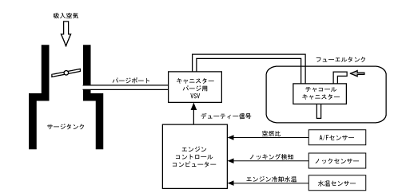

| Canister Purge Control |
| ● |
A 1-way purge passage is provided, and the fuel vapor from the charcoal canister flowing to the purge port is controlled according to the engine condition. Fuel vapor absorbed in the canister is drawn into the engine to prevent the release of fuel vapor.
|
| ● |
The purge port is located downstream of the throttle valve, and fuel vapor is drawn into the intake manifold according to the driving conditions. The purge volume is controlled by a VSV provided in the purge line.
|
 |
| Related Systems |
 Knock Sensor Operation Knock Sensor Operation
|
 Related Parts Related Parts
|